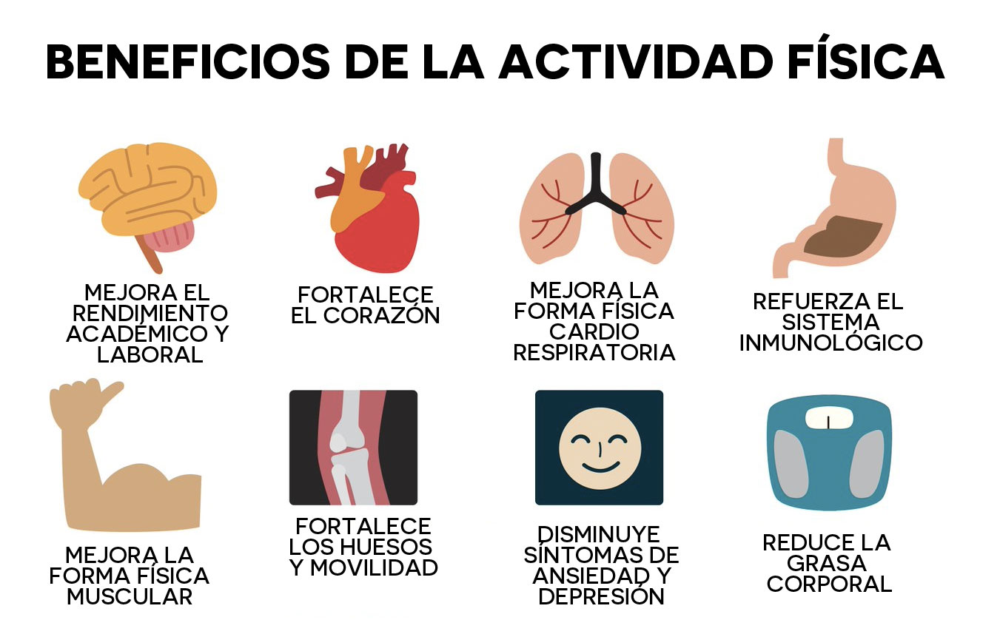

| --INICIO-- |
--Beneficios-- |
-- Calentamiento -- |
-- Futbol -- |
-- voleibol-- |
-- boxeo -- |
Beneficios de las actividades fisicas
La actividad física trae múltiples beneficios para la salud, tanto en el cuerpo como en la mente. Realizar ejercicio de forma regular fortalece los músculos y los huesos, mejora la circulación, aumenta la resistencia y ayuda a mantener un peso saludable, además, reduce el riesgo de desarrollar enfermedades como la obesidad, la diabetes tipo 2, la hipertensión o problemas del corazón.
No solo aporta mejoras físicas, sino también mentales y emocionales, al movernos, nuestro cuerpo libera endorfinas, conocidas como las “hormonas de la felicidad”, que ayudan a reducir el estrés, la ansiedad y la depresión, también mejora el estado de ánimo, la autoestima y favorece un mejor descanso durante la noche.
En el aspecto social, la actividad física promueve la convivencia, el trabajo en equipo y la formación de amistades,al practicar deportes o hacer ejercicio en grupo, se desarrollan valores como el respeto, la responsabilidad, la disciplina y el compañerismo, finalmente, mantenerse activo desde joven ayuda a tener una mejor calidad de vida en el futuro, previniendo enfermedades y permitiendo que las personas sean más independientes y saludables en la vejez, por eso, la actividad física no solo es buena, sino esencial para llevar una vida plena y equilibrada.
La actividad física es esencial para el mantenimiento y mejora de la salud y la prevención de las enfermedades, para todas las personas y a cualquier edad. La actividad física contribuye a la prolongación de la vida y a mejorar su calidad, a través de beneficios fisiológicos, psicológicos y sociales, que han sido avalados por investigaciones científicas.
La actividad física reduce el riesgo de padecer: Enfermedades cardiovasculares, tensión arterial alta, cáncer de colon y diabetes.
Ayuda a controlar el sobrepeso, la obesidad y el porcentaje de grasa corporal.
Fortalece los huesos, aumentando la densidad ósea.
Fortalece los músculos y mejora la capacidad para hacer esfuerzos sin fatiga (forma física).
Beneficios psicológicos
La actividad física mejora el estado de ánimo y disminuye el riesgo de padecer estrés, ansiedad y depresión; aumenta la autoestima y proporciona bienestar psicológico.
Beneficios sociales
Fomenta la sociabilidad.
Aumenta la autonomía y la integración social, estos beneficios son especialmente importantes en el caso de discapacitación física o psíquica.

¿Qué nivel de actividad física se recomienda?
La Organización Mundial de la Salud recomienda:
Para niñas y niños menores de 5 años
Lactantes (de menos de 1 año) deben realizar juegos interactivos en el suelo, al menos 30 minutos boca abajo, repartidos a lo largo del día, mientras estén despiertos.
Niñas y niños de 1 a 2 años
Diferentes tipos de actividades físicas, de moderadas a intensas, durante 180 minutos, a lo largo del día.
Niñas y niños de 3 a 4 años de edad
Al menos 180 minutos, 60 de actividades físicas, de moderadas a intensas, durante el día.
Niñas, niños y adolescentes de 5 a 17 años
Alrededor de 60 minutos al día de actividades físicas, de moderadas a intensas, principalmente aeróbicas, a lo largo de la semana; incorporar actividades aeróbicas intensas, y para fortalecer músculos y huesos, tres días a la semana.
Personas adultas de 18 a 64 años
Actividades físicas aeróbicas moderadas de 150 a 300 minutos; o intensas durante 75 a 150 minutos; o una combinación equivalente a lo largo de la semana; también realizar actividades de fortalecimiento muscular, moderadas o intensas, para ejercitar todos los grupos musculares, dos o más días a la semana.
Mujeres embarazadas
Actividades físicas aeróbicas moderadas al menos 150 minutos a lo largo de la semana; incorporar una variedad de actividades aeróbicas y de fortalecimiento muscular; aeróbicas moderadas de 150 a 300 minutos e intensas de 75 a 150 minutos; o una combinación equivalente durante la semana.
Niñas, niños y adolescentes con discapacidad
Al menos 60 minutos al día de actividades físicas, de moderadas a intensas, principalmente aeróbicas, a lo largo de la semana; incorporar actividades aeróbicas intensas, así como aquellas que fortalecen músculos y huesos, tres días a la semana.
Personas adultas con discapacidad
Actividades físicas aeróbicas moderadas de 150 a 300 minutos, o intensas de 75 a 150 minutos, o una combinación equivalente a lo largo de la semana.